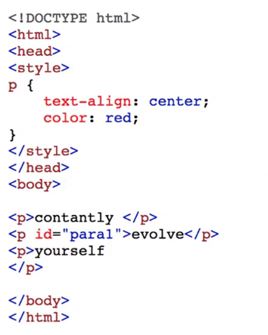
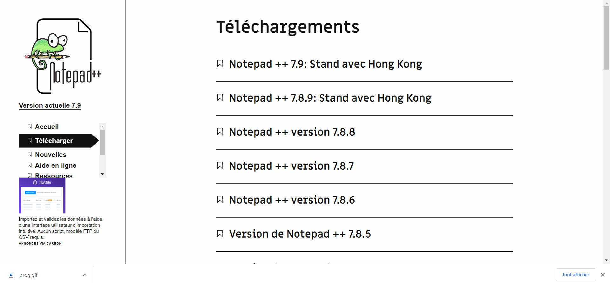
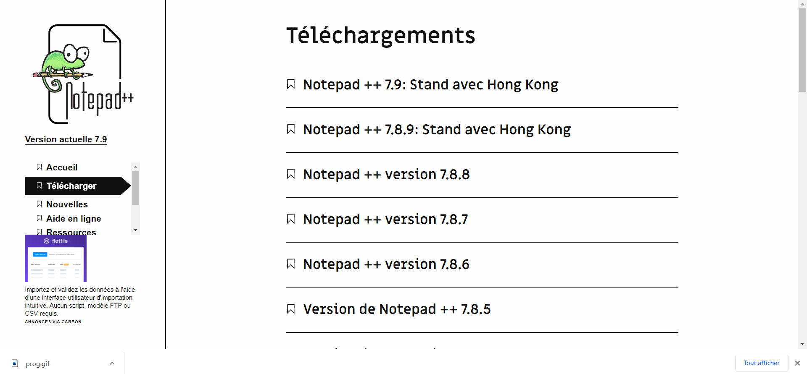

NOTEPAD++
Notepad++ est un éditeur de texte libre générique, fonctionnant sous Windows, codé en C++, qui intègre la coloration syntaxique de code source pour les langages et fichiers C, C++, Java, C#, XML,
fondé sur la composante Scintilla, a pour but de fournir un éditeur léger (aussi bien au niveau de la taille du code compilé que des ressources occupées durant l’exécution) et efficace. Il est également une alternative au bloc-notes de Windows (d’où le nom).
Le projet est sous licence GPL version 2. Un équivalent sous Linux serait Gedit ou encore Kate.
Il ne bloque pas le fichier en cours d'édition et détecte toute modification apportée à celui-ci par un autre programme (il propose de le recharger).
Cette caractéristique lui permet d'être WYSIWYG pour la plupart des langages interprétés (comme HTML et CSS) avec ou sans actualisation de la part de l'utilisateur (grâce aux macros, ou aux extensions).
Il a été développé par Don Ho, un informaticien situé à Paris diplômé de l'université Paris VII - Diderot en 2000.
fondé sur la composante Scintilla, a pour but de fournir un éditeur léger (aussi bien au niveau de la taille du code compilé que des ressources occupées durant l’exécution) et efficace. Il est également une alternative au bloc-notes de Windows (d’où le nom).
Le projet est sous licence GPL version 2. Un équivalent sous Linux serait Gedit ou encore Kate.
Il ne bloque pas le fichier en cours d'édition et détecte toute modification apportée à celui-ci par un autre programme (il propose de le recharger).
Cette caractéristique lui permet d'être WYSIWYG pour la plupart des langages interprétés (comme HTML et CSS) avec ou sans actualisation de la part de l'utilisateur (grâce aux macros, ou aux extensions).
Il a été développé par Don Ho, un informaticien situé à Paris diplômé de l'université Paris VII - Diderot en 2000.


 
